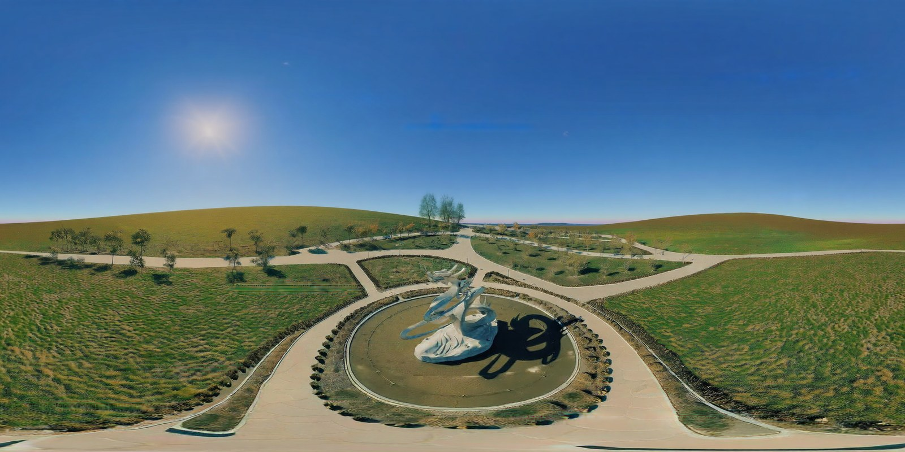
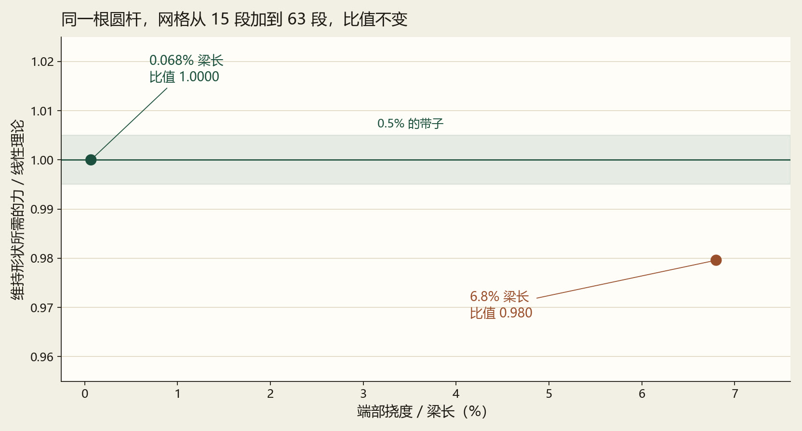
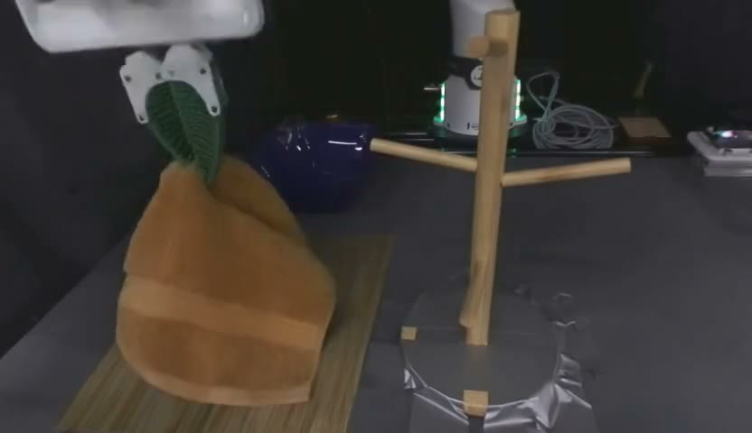
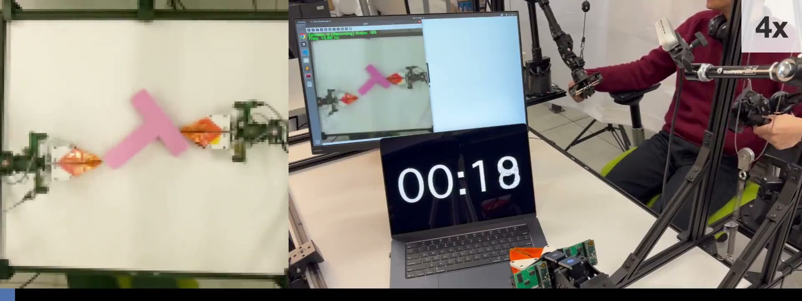
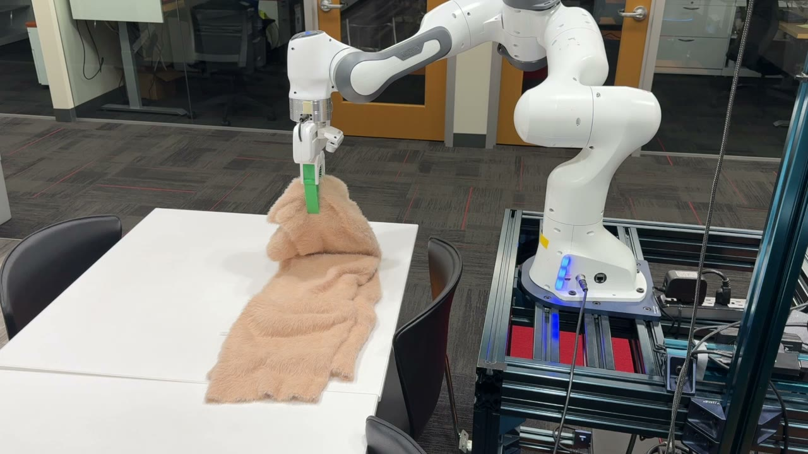
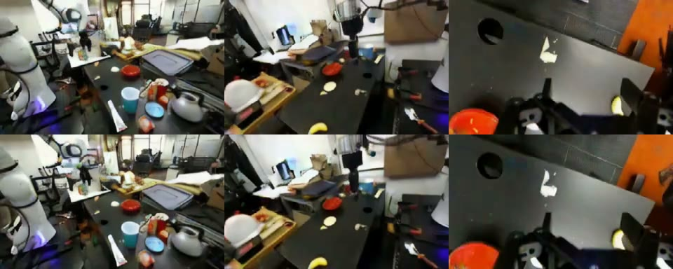

在 AMD ROCm 上移植并优化前沿机器人模型
覆盖 Radeon RDNA3、RDNA4 与 Ryzen RDNA3.5 平台。

【一卡一世界】这回一张卡装不下：HY-World 2.0 把一张照片变成能走进去的 3D 世界 | arXiv HY-World 2.0技术报告复现笔记
不拍电影，直接盖房子：一张照片先画成全景图，再一路补成能进引擎的 3D 世界。重建一张 W7900 就够；全景图要 59 GiB，这回一张卡装不下。

【一卡一世界】仿真想替真机打分，绳子得软，颜色得像那台相机 | ICRA 2026 Real2Sim-Eval论文复现笔记
仿真想替真机给策略排名次，画面得对齐到那台相机，绳子的弹性得从视频里辨识出来。在一张 W7900 上跑完 27 组绳子评测：18 组成功，失败扎堆在网格的同一侧。

【一卡一世界】换了五种灯，机器人只认得那间厨房 | World Labs Atlas × DM0.5 复现笔记
同一个策略、同一批种子，只把背景换成一间真实厨房的 3D 高斯，一半回合换了结局。在部署场景里渲染训练数据，成功率高 17 个点，换到另一张卡上仍然成立。

【一卡一世界】把一帧画面压成 192 个数，再在里面挑动作 | NeurIPS 2026 LeWorldModel论文复现笔记
一张画面压成 192 个数，规划在这 192 维里做完。一道正态性检验，管住了 JEPA 的坍塌。

小挠度时，MuJoCo 4 的弹性杆和课本上的悬臂梁重合
小挠度下，端部反力和欧拉-伯努利公式一致到百万分之二。挠到梁长的 6.8%，先离开的是线性公式。

【一卡一世界】露出机械臂，它演世界；露出杯子，它演机器人 | arXiv Masked Visual Actions论文复现笔记
把机械臂这一路画出来，其余涂灰，剩下的交给视频模型补完：露出机械臂它演世界，露出杯子它演机器人。在 W7900 上，SDPA 这条退路成了主路，VAE 里悄悄算错的注意力换回了精确内核。

【一卡一世界】把真机械臂拍成两百万个高斯，再按关节角搬家 | ICRA 2025 SplatSim论文复现笔记
物理留给 PyBullet，画面换成真实场景的两百万个高斯，按关节角搬家。在 W7900 上重画作者的训练视角，和 CUDA 版最多差一个灰度级；420 条轨迹全部重拍。

世界会自己动，手得另学一门语言：World2Act 在一张 W7900 上
一个会画下一秒的视频模型，潜空间里已经含着动作。先把它的老师请上一张 W7900：35 步校正流画完一段芒果，前提是给 25.6 GiB 的卷积展开表腾出地方。

【一卡一世界】几何有否决权：为什么仿真视频训不出真桌子上的策略 | arXiv RoboRender论文复现笔记
仿真继续负责几何和动作，视频模型负责把这条轨迹画成真实世界里的颜色。

【一卡一世界】一个咖啡馆推近镜头，到底值多少分？ | ICCV 2025 WorldScore论文复现笔记
镜头往前推的时候，吧台还在不在原来的地方。WorldScore 把这件事拆开打分。

【一卡一世界】没有物理引擎的世界，还是要一把尺子 | RSS 2026 IWS论文复现笔记
给一帧画面和一串动作，在像素里把下一秒演完，中间不请物理引擎当裁判。

【一卡一世界】动作也是一团点：机器人怎样在下一秒「看见」围巾垂下来 | CVPR 2026 PointWorld论文复现笔记
状态和动作说同一种语言。给一张 RGB-D，预言每一个点下一秒往哪里走。

【一卡一世界】机器人还没动手，我已经在显卡里把它考了一遍 | ICLR 2026 Ctrl-World论文复现笔记
让策略在想象里把操作滚完。想象只要足够听话，排名就可以先在显卡上排出来。